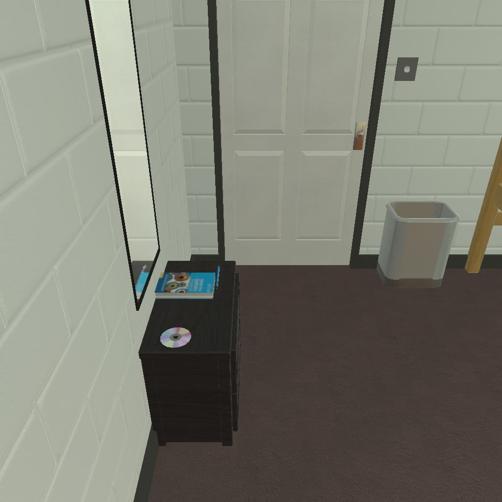

---------------------------------------------------------task: 8---------------------------------------------------------
--------------------------------------------------------------------------------------------------------------------------------------------------------------------
--------------------------------------------------------------------------------------------------------------------------------------------------------------------
Step:--------------------------------------------------------------------------0-------------------------------------------------------------------------------
----------------------------------------
VLM Prompt:
Image1:
**Instruction**
1. Analyze the provided image to identify all visible household objects, focusing on those relevant to the task description "put a laptop in desk."
2. Use the analysis of the image and the task hint "The agent must find an object of the desired type, pick it up, find the correct location to place it, and put it down there." to answer the question: what is the most reasonable action in the choices for the task description "put a laptop in desk"?
4. Decide and write the answer using the template: The answer is: (i): , where i is the real number. If there is no desired object in the image, search every place based on **Initial Observation** to find the object. And if no one is exactly correct, choose a similar answer.
**Initial Observation**
You are in the middle of a room. Looking quickly around you, you can see bed (1), garbagecan (1), desk (1), sidetable (1), drawer (1-5), laundryhamper (1)
**Answer Choices**
(1): go to bed 1
(2): go to garbagecan 1
(3): go to desk 1
(4): go to sidetable 1
(5): go to drawer 1
(6): go to drawer 2
(7): go to laundryhamper 1
(8): go to drawer 3
(9): go to drawer 4
(10): go to drawer 5
**Answer**
Let's think step by step by following the instructions.
----------------------------------------
----------------------------------------
Original Response:
Firstly, we analyze the image provided. We can see a desk with a mirror above it and a sidetable with some items on it, including what appears to be a DVD case and a CD. There is also a trash can and a part of a ladder visible in the image. However, there is no laptop visible on the desk or sidetable.
Based on the task description "put a laptop in desk," and the task hint which suggests that we need to find an object of the desired type (a laptop), the most reasonable action would be to search for the laptop. Since it is not visible in the image, we would rely on the Initial Observation, which lists all the visible household objects in the room.
The Initial Observation does not mention a laptop, but it does mention a desk, sidetable, and several drawers. Since laptops are commonly stored in desks or drawers when not in use, the most logical locations to search would be the desk and the drawers.
Therefore, the most reasonable action from the choices given would be to go to the desk or one of the drawers to search for the laptop. Since "go to desk 1" is one of the answer choices, we will select that action.
The answer is: (3): go to desk 1.
----------------------------------------
----------------------------------------
>>> Refine Original VLM Response and Get Pure Action: go to desk 1
----------------------------------------
-----------------------------------------------------------------
Running time: 9.804481744766235 seconds
Total Money: 1.93946
-----------------------------------------------------------------
-----------------------------------------------------------------
Text Observation:You arrive at loc 2. On the desk 1, you see a alarmclock 1, a cellphone 1, a pencil 1, and a pen 1.
-----------------------------------------------------------------
UNSUCCEED